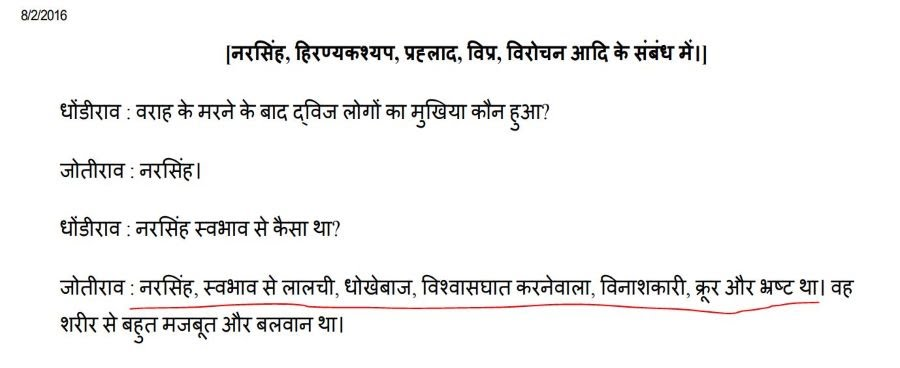

ਫੁਲੇ ਦੀ ਗੁਰਮਤਿ ਵਿਰੋਧੀ ਵਿਚਾਰਧਾਰਾ ਤੋਂ ਸੈਣੀ ਸਿੱਖ ਭਾਈਚਾਰਾ ਬਚ ਕੇ ਰਹੇ ਅੱਜ ਕੱਲ ਪੰਜਾਬ ਤੋਂ ਬਾਹਰ ਵੱਸਣ ਵਾਲੇ ਮਾਲੀ ਭਾਈਚਾਰੇ ਦੋ ਕੁਜ ਆਗੂ ਤਥਾਕਥਿਤ ਸਮਾਜ ਸੁਧਾਰਕ ਜੋਤੀ ਰਾਓ ਫੁਲੇ ਦੀ ਵਿਚਾਰਧਾਰਾ ਦਾ ਵੱਧ ਚੜ੍ਹ ਕੇ ਪ੍ਰਚਾਰ ਕਰ ਰਹੇ ਨੇ | ਗੋਰ ਤਲਬ ਹੈ ਕੇ ਇਹ ਭਾਈਚਾਰੇ ਦੇ ਕੁਜ ਲੋਕ 1936 ਤੋਂ ਗ਼ਲਤ ਰੂਪ ਵਿਚ ਮੱਲੋਮੱਲੀ ਸੈਣੀ ਪਹਿਚਾਣ ਦੀ ਦੁਰਵਰਤੋਂ ਵੀ ਕਰ ਰਹੇ ਹਨ | ਅੰਗਰੇਜ਼ੀ ਕਾਲ ਵਿਚ ਸੈਣੀ ਭਾਈਚਾਰੇ ਨੂੰ "ਮਾਰਸ਼ਲ ਕਾਸਟ" ਦਾ ਦਰਜਾ ਪ੍ਰਾਪਤ ਸੀ | ਇਸ ਕਾਰਣ ਸੈਣੀ ਨੌਜਵਾਨਾਂ ਦੀ ਭਰਤੀ ਫੌਜ ਵਿਚ ਬਿਨਾ ਕਿਸੇ ਰੋਕ ਟੋਕ ਦੇ ਸਿੱਧੇ ਤੌਰ ਤੇ ਹੁੰਦੀ ਸੀ | ਕਈ ਜ਼ਾਤਾਂ ਨੂੰ ਇਹ ਦਰਜਾ ਹਾਸਲ ਨਹੀਂ ਸੀ ਤੇ ਉਹ ਲੋਕ ਫੌਜ ਵਿਚ ਨੌਕਰੀ ਨਹੀਂ ਪ੍ਰਾਪਤ ਕਰ ਸਕਦੇ ਸਨ | ਇਸ ਕਾਰਣ ਫੌਜ ਤੋਂ ਬੇਦਖ਼ਲ ਕੌਮਾਂ ਆਪਣੇ ਨਾਮ ਬਦਲ ਕੇ ਤੇ ਝੂੱਠੇ ਸੱਚੇ ਇਤਿਹਾਸ ਘੜ ਕੇ ਫੌਜ ਵਿਚ ਨੌਕਰੀ ਲੈਣ ਦਾ ਹਰ ਪ੍ਰਕਾਰ ਦਾ ਯਤਨ ਕਰਦਿਆਂ ਸਨ | 1930 ਦੇ ਦਸ਼ਕ ਵਿਚ ਮਾਲੀ ਕੌਮ ਨੇ ਵੀ ਇਸ ਕਾਰਣ ਆਪਣੇ ਆਪ ਨੂੰ ਦਸਤਾਵੇਜ਼ੀ ਤਿਗੜ੍ਹਮਬਾਜ਼ੀ ਰਾਹੀਂ "ਸੈਣੀ " ਘੋਸ਼ਿਤ ਕਰਵਾ ਲਿਆ ਜਦ ਕਿ ਉਨ੍ਹਾਂ ਦਾ "ਸੈਣੀ" (ਜੋ ਕਿ "ਸ਼ੂਰਸੈਨੀ" ਸ਼ਬਦ ਦਾ ਸੰਖੇਪੀਕਰਣ ਹੈ) ਕੌਮ ਨਾਲ ਕਿਸੇ ਸਮਾਜਿਕ , ਏਤੀਹਾਸਿਕ ਜਾਂ ਪੁਸ਼ਤੈਣੀ ਕਿਸਮ ਦਾ ਕੋਈ ਰਿਸ਼ਤਾ ਨਹੀਂ ਸੀ | ਸਾਨੂੰ ਸਾਰੀਆਂ ਕੌਮਾਂ ਦਾ ਸਤਿਕਾਰ ਕਰਨਾ ਚਾਹੀਦਾ ਹੈ | ਪਰ ਇਸਦਾ ਇਹ ਮਤਲਬ ਨਹੀਂ ਕਿ ਸਾਡੇ ਕੋਲ ਹੁਣ ਆਪਣੇ ਇਤਿਹਾਸ ਅਤੇ ਪੁਸ਼ਤੈਣੀ ਧਾਰਮਿਕ ਵਿਚਾਰਧਾਰਾ ਨੂੰ ਸੁਰੱਖਿਤ ਰੱਖਣ ਦਾ ਅਧਿਕਾਰ ਖਤਮ ਹੋ ਗਿਆ ਹੈ | ਇਸ ਪੱਖੋਂ ਪੰਜਾਬ ਦੇ ਸੈਣੀ ਭਾਈਚਾਰੇ ਨੂੰ ਜਾਗ੍ਰਤ ਰਹਿਣ ਦੀ ਬਹੁਤ ਲੋੜ ਹੈ | ਮਾਲੀ ਕੌਮ ਦੇ ਕੁਜ ਆਗੂਆਂ ਦ੍ਵਾਰਾ "ਸੈਣੀ" ਨਾਮ ਦੀ ਦੁਰਵਰਤੋਂ ਦੇ ਸੈਣੀ ਭਾਈਚਾਰੇ ਨੂੰ ਸਮਾਜਿਕ ਤੇ ਸਭਿਯਾਚਾਰੀ ਰੂਪ ਵਿਚ ਬਹੋਤ ਨੁਕਸਾਨ ਹੋਏ ਹਨ | ਕੌਮ ਦੀ ਐਸੀ ਹੀ ਅਨੰਗੈਲੀ ਕਾਰਣ ਸਰਕਾਰ ਨੇ 2016 ਵਿਚ ਸੈਣੀ ਕੌਮ ਨੂੰ ਧੱਕੇ ਨਾਲ ਪਿਛੜੀ ਸ਼੍ਰੇਣੀ ਵਿਚ ਸੁੱਟ ਦਿੱਤਾ ਜਿਸਦੀ ਠਾਹ ਸੈਣੀ ਕੌਮ ਦੇ ਅਣਖੀਲੇ ਗੱਬਰੂਆਂ ਦੇ ਦਿਲੋ ਦਿਮਾਗ ਤੇ ਬਹੁਤ ਜ਼ੋਰ ਨਾਲ ਵੱਜੀ ਹੈ | ਸੈਣੀ ਕੌਮ ਦੇ ਲੋਕਾਂ ਨੂੰ ਚਾਹੀਦਾ ਹੈ ਸਮਾਜਿਕ ਨੁਕਸਾਨ ਕਰਵਾਉਣ ਤੋਂ ਬਾਅਦ ਹੁਣ ਘੱਟੋਂ ਘਟ ਆਪਣਾ ਧਾਰਮਿਕ ਨੁਕਸਾਨ ਤੇ ਨਾ ਕਰਵਾਉਣ | ਜਿਵੇਂ ਕਿ ਪਹਿਲਾ ਦੱਸਿਆ ਸੀ ਕਿ ਅੱਜ ਕੱਲ ਜੋਤੀ ਰਾਓ ਫੁਲੇ ਦੀ ਫੋਟੋ ਤੇ ਉਸਦੀ ਗੁਰਮਤਿ ਵਿਰੋਧੀ ਵਿਹਾਰਧਾਰਾ ਮਾਲੀ ਕੌਮ ਦੇ ਕੁਜ ਆਗੂਆਂ ਦ੍ਵਾਰਾ ਸੈਣੀ ਕੌਮ ਉੱਤੇ ਮੱਲੋਮੱਲੀ ਸੋਸ਼ਲ ਮੀਡਿਆ ਦੀ ਦੁਰਵਰਤੋਂ ਕਰਕੇ ਥੋਪੀਆਂ ਜਾ ਰਹੀਆਂ ਹਨ| ਜੋਤਿ ਰਾਓ ਫੁਲੇ ਦੀ ਵਿਚਾਰਧਾਰਾ ਪੰਜਾਬ ਦੇ ਸਿੱਖ ਤੇ ਸਨਾਤਨੀ ਸੈਣੀਆਂ ਦੋਵਾਂ ਲਈ ਘਾਤਕ ਹੈ ਤੇ ਧਰਮ ਵਿਰੋਧੀ ਹੈ | ਸੈਣੀ ਕੌਮ ਦੇ ਨੌਜਵਾਨਾਂ ਨੂੰ ਇਸਦਾ ਖੁਲ ਕੇ ਵਿਰੋਧ ਕਰਨਾ ਚਾਹੀਦਾ ਹੈ | ਇਸਦੇ ਪ੍ਰਮਾਣ ਲਈ ਹੇਠਾਂ ਫੁਲੇ ਦੀ ਵਿਚਾਰਧਾਰਾ ਦਾ ਇਕ ਨਮੂਨਾ ਪੇਸ਼ ਕੀਤਾ ਜਾ ਰਿਹਾ ਹੈ | ਸ਼੍ਰੀ ਗੁਰੂ ਗਰੰਥ ਸਾਹਿਬ ਜੀ ਦੇ ਅੰਗ ੧੧੬੫ ਉੱਤੇ ਅਰਜਨ ਪਾਤਸ਼ਾਹ ਨੇ ਸਾਰੇ ਗੁਰਸਿਖਾਂ ਨੂੰ ਭਗਤ ਨਾਮਦੇਵ ਜੀ ਦੇ ਮੁਖਵਾਕ ਰਾਹੀਂ ਭਗਤ ਪ੍ਰਹਲਾਦ ਦੇ ਪਰਮਾਤਮਾ ਪ੍ਰਤੀ ਪੂਰੇ ਅਤੇ ਅਟੁੱਟ ਸਮਰਪਣ ਦੀ ਪਾਵਨ ਕਥਾ ਸੁਣਾਈ ਹੈ | ਗਿਰਿ ਤਰ ਜਲ ਜੁਆਲਾ ਭੈ ਰਾਖਿਓ ਰਾਜਾ ਰਾਮਿ ਮਾਇਆ ਫੇਰੀ ॥੩॥ गिरि तर जल जुआला भै राखिओ राजा रामि माइआ फेरी ॥३॥ Gir ṯar jal ju▫ālā bẖai rākẖi▫o rājā rām mā▫i▫ā ferī. ||3|| Prahlaad was thrown off a mountain, into the water, and into a fire, but the Sovereign Lord God saved him, by changing the laws of nature. ||3|| ਕਾਢਿ ਖੜਗੁ ਕਾਲੁ ਭੈ ਕੋਪਿਓ ਮੋਹਿ ਬਤਾਉ ਜੁ ਤੁਹਿ ਰਾਖੈ ॥ काढि खड़गु कालु भै कोपिओ मोहि बताउ जु तुहि राखै ॥ Kādẖ kẖaṛag kāl bẖai kopi▫o mohi baṯā▫o jo ṯuhi rākẖai. Harnaakhash thundered with rage and threatened to kill Prahlaad. "Tell me, who can save you? ਪੀਤ ਪੀਤਾਂਬਰ ਤ੍ਰਿਭਵਣ ਧਣੀ ਥੰਭ ਮਾਹਿ ਹਰਿ ਭਾਖੈ ॥੪॥ पीत पीतांबर त्रिभवण धणी थ्मभ माहि हरि भाखै ॥४॥ Pīṯ pīṯāʼnbar ṯaribẖavaṇ ḏẖaṇī thambẖ māhi har bẖākẖai. ||4|| Prahlaad answered, "The Lord, the Master of the three worlds, is contained even in this pillar to which I am tied."||4|| ਹਰਨਾਖਸੁ ਜਿਨਿ ਨਖਹ ਬਿਦਾਰਿਓ ਸੁਰਿ ਨਰ ਕੀਏ ਸਨਾਥਾ ॥ हरनाखसु जिनि नखह बिदारिओ सुरि नर कीए सनाथा ॥ Harnākẖas jin nakẖah biḏāri▫o sur nar kī▫e sanāthā. The Lord who tore Harnaakhash apart with His nails proclaimed Himself the Lord of gods and men. ਕਹਿ ਨਾਮਦੇਉ ਹਮ ਨਰਹਰਿ ਧਿਆਵਹ ਰਾਮੁ ਅਭੈ ਪਦ ਦਾਤਾ ॥੫॥੩॥੯॥ कहि नामदेउ हम नरहरि धिआवह रामु अभै पद दाता ॥५॥३॥९॥ Kahi nāmḏe▫o ham narhar ḏẖi▫āvėh rām abẖai paḏ ḏāṯā. ||5||3||9|| Says Naam Dayv, I meditate on the Lord, the Man-lion, the Giver of fearless dignity. ||5||3||9|| (ਸ਼੍ਰੀ ਗੁਰੂ ਗਰੰਥ ਸਾਹਿਬ ਜੀ , ਅੰਗ 1165) ਹੁਣ ਤੁਸੀਂ ਵੇਖੋ ਕਿ ਜੋਤੀ ਰਾਓ ਫੁਲੇ ਕਿਸ ਬੇਹੂਦਗੀ ਨਾਲ ਸਿਖਾਂ ਤੇ ਸਨਾਤਨੀਆਂ ਦੋਵਾਂ ਲਈ ਅਤਿ ਪਵਿੱਤਰ ਕਥਾ ਵਿਚ ਆਏ ਪਰਮਾਤਮਾ ਦੇ ਰੂਪ ਵਿਚ ਪ੍ਰਗਟ ਹੋਏ ਨਰਸਿੰਘ ਅਵਤਾਰ ਜੀ ਦੀ ਕਿਵੇਂ ਨਖੇਦੀ ਕਰਦਾ ਹੈ :  ਹਰਿ ਦੇ ਜਿਸ ਭਾਵ ਨੂੰ ਸਤਿਗੁਰੂ ਪਾਤਸ਼ਾਹ ਭਗਤ ਵਤਸਲ ਅਤੇ ਅਤਿਅੰਤ ਦਯਾਲੁ ਦੇ ਰੂਪ ਵਿਚ ਪੇਸ਼ ਕਰਦੇ ਨੇ ਉਸਨੂੰ ਜੋਤੀ ਰਾਓ ਫੁਲੇ "ਲਾਲਚੀ , ਧੋਖੇਬਾਜ਼ , ਵਿਸ਼ਵਾਸਘਾਤੀ , ਵਿਨਾਸ਼ਕਾਰੀ ਅਤੇ ਭ੍ਰਸ਼ਟ" ਦੱਸਦਾ ਹੈ | ਇਹ ਪ੍ਰਸੰਗ ਜੋਤਿ ਰਾਓ ਫੁਲੇ ਦੀ ਪੁਸਤਕ "ਗੁਲਾਮਗਿਰੀ" ਵਿੱਚੋ ਉਧਰਤ ਕੀਤਾ ਹੈ ਜਿਸਦਾ ਹਵਾਲਾ ਤੁਸੀਂ ਸੰਧਰਭਾਂ ਹੇਠ ਵੇਖ ਸਕਦੇ ਹੋ | ਪੂਰੀ ਪੁਸਤਕ ਵਿਚ ਸਿਖਾਂ ਤੇ ਸਨਾਤਨੀਆਂ ਦੋਵਾਂ ਲਈ ਅਤਿ ਪਵਿੱਤਰ ਮਹਾਪੁਰਖਾਂ ਨੂੰ ਜੋਤਿ ਰਾਓ ਫੁਲੇ ਨੇ ਰੱਜ ਕੇ ਗਾਲ਼ਾਂ ਕੱਢੀਆਂ ਹਨ | ਕੋਈ ਵੀ ਗੁਰਸਿੱਖ ਜੇ ਗੁਰਬਾਣੀ ਨਿੰਦਕ ਵਿਚਾਰਧਾਰਾ ਜਾਂ ਗੁਰਬਾਣੀ ਵਿਰੋਧੀ ਵਿਅਕਤੀ ਦਾ ਕਿਸੇ ਕਾਰਣ ਵੀ ਜੇ ਸਮਰਥਨ ਕਰਦਾ ਹੈ ਤੇ ਉਹ ਸਿੱਖੀ ਤੋਂ ਆਪੋ ਆਪ ਹੀ ਖਾਰਿਜ ਹੈ | ਇਸ ਲਈ ਪੰਜਾਬ ਦੇ ਸਾਰੇ ਸੈਣੀ ਭਰਾਵਾਂ ਨੂੰ ਫੁਲੇ ਦੀ ਵਿਚਾਰਧਾਰਾ ਦਾ ਕਿਸੇ ਵੀ ਕੀਮਤ ਉੱਤੇ ਸਮਰਥਨ ਨਹੀਂ ਕਰਨਾ ਚਾਹੀਦਾ| ਜੇ ਕੋਈ ਅਣਜਾਣ ਭਰਾ ਇਸ ਦੁਸ਼੍ਪ੍ਰਚਾਰ ਦਾ ਸ਼ਿਕਾਰ ਹੋ ਕੇ ਸੋਸ਼ਲ ਮੀਡਿਆ ਤੇ ਫੁਲੇ ਦੀਆਂ ਫੋਟੋਆਂ ਲਾਉਂਦਾ ਹੈ ਉਸਨੂੰ ਸਮਝਾਓ ਕਿ ਉਹ ਇਸ ਗੁਰਮਤਿ ਵਿਰੋਧੀ ਵਿਅਕਤੀ ਦਾ ਪ੍ਰਚਾਰ ਕਰਕੇ ਪਾਪ ਦਾ ਭਾਗੀ ਨਾ ਬਣੇ| ਜੇ ਕੋਈ ਸਿੱਖ ਜਾਂ ਸਨਾਤਨੀ ਭਰਾ ਫੇਰ ਵੀ ਫੁਲੇ ਦਾ ਪ੍ਰਚਾਰ ਕਰੇ ਤੇ ਉਸਨੂੰ ਪਤਿਤ ਸਮਝੋ| ਉਸਦਾ ਸਮਾਜਿਕ ਬਹਿਸ਼ਕਾਰ ਕਰਨ ਦੀ ਜਿੰਮੇਦਾਰੀ ਸਾਰੇ ਜਾਗਰੂਕ ਸੈਣੀ ਭਰਾਵਾਂ ਤੇ ਭੈਣਾਂ ਦੀ ਬਣਦੀ ਹੈ |
|  ਗੁਰੂ ਅਰਜਨ ਦੇਵ ਜੀ ਪਾਤਸ਼ਾਹੀ ਪੰਜਵੀਂ  ਜੋਤੀ ਰਾਓ ਫੁਲੇ ਜੋਤੀ ਰਾਓ ਫੁਲੇ ਦਾ ਸੈਣੀ ਭਾਈਚਾਰੇ ਨਾਲ ਕੋਈ ਸੰਬੰਧ ਨਹੀਂ ਸੀ | ਇਸਦਾ ਸੰਬੰਧ ਮਹਾਰਾਸ਼ਟਰ ਦੀ ਮਾਲੀ ਜ਼ਾਤ ਨਾਲ ਸੀ | ਇਸਦੀ ਸਾਰੀ ਵਿਚਾਰਧਾਰਾ ਗੁਰਮਤਿ ਵਿਰੋਧੀ ਸੀ ਜਿਸਦਾ ਨਮੂਨਾ ਖੱਬੇ ਪਾਸੇ ਪੇਸ਼ ਕੀਤਾ ਗਿਆ ਹੈ | ਪੰਜਾਬ ਦੇ ਕਿਸੇ ਵੀ ਸੈਣੀ ਵਿਅਕਤੀ ਨੂੰ ਇਸਦੀ ਫੋਟੋ ਤੇ ਵਿਚਾਰਧਾਰਾ ਤੋਂ ਸਾਵਧਾਨ ਰਹਿਣਾ ਚਾਹੀਦਾ ਹੈ ਤੇ ਡੱਟ ਕੇ ਇਸਦਾ ਵਿਰੋਧ ਕਰਨਾ ਚਾਹੀਦਾ ਹੈ | |
Neo-Saini Groups > An Urban Legend >